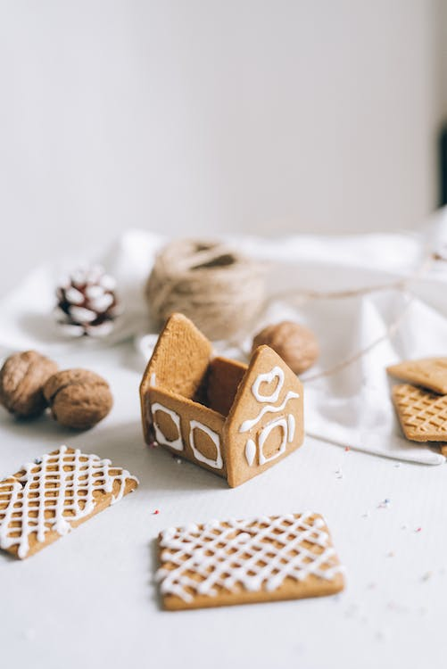

Gingerbread House

The Gingerbread House
The Gingerbread House is a wonderful recipe to satisfy any sweet tooth and is often seen throughout the Christmas holiday season.
Ingredients for the Gingerbread House
- 250g unsalted butter
- 200g dark muscovado sugar
- 27 tbsp golden syrup
- 600g plain flour
- 2 tsp bicarbonate of soda
- 44 tsp ground ginger
What you need to decorate your Gingerbread House
- 200g flaked almonds
- 2 egg whites
- 500g icing sugar, plus extra to dust
- 125g mini chocolate fingers
- generous selection of sweets of your choice, choose your own colour theme
- 1 mini chocolate roll or a dipped chocolate flake
- few edible silver balls
How to make the Gingerbread House
Take your time with these steps!
- Preheat the oven to 200ºC
- Put the sugar, butter and syrup all together in a pan and mix
- Then mix the flour, bicarbonate of soda and ground ginger into a big bowl
- Add the butter mixture from earlier into the mixture to make a stiff dough
- Using the template from here.
Put a sheet of baking paper down and roll approximately one quarter of the dough to the thickness of 3mm
- Cut out one of the sections from the template, re-roll the dough and cut the rest of the shapes out
- Place all the cut out shapes on to the baking tray
- Using the most complete almonds, place them gently into the roof sections you cut out earlier
- Put the tray with all the sections in the oven for 12 minutes until the edges have darkened
- Once the dough is cooked, trim and even up any edges
- Putting the egg whites in to a large bowl, sift in the icing sugar and stir to make into a smooth but thick icing mixture.
How to build and decorate your house
- After making the mixture, scoop it into a piping bag with a medium sized nozzle and use a cement to join the walls together. You may need to use smaller bowls to hold the walls up and together
allow to dry for a few hours before moving
- The next tricky bit is adding the roof to the walls, so, using the same technique you will use the icing to fix the roof to the walls. You will need to hold this for a few minutes to allow the icing to harden
- Allow to dry overnight
- Use the icing to create 'glue' and stick chocolate fingers length ways around the house and vertical for the door
- Glue the sweets to the house using icing, around the door and on the front of the house
- Icicles can be made by using the piping tool by creating a small pea-sized blob of icing and then pull away, this creates a pointy trail
- Chocolate mini roll or a Flake can be used to make a chimney, cut to shape and glue with icing to the roof
- Create yourself a nice little pathway, maybe some fencing with the chocolate fingers and finish off with a dusting of icing sugar to create a snowy, winter scene.
Congratulations, your Gingerbread House is now complete
This recipe and gingerbread house template were sourced from BBC Good Food https://www.bbcgoodfood.com/recipes/simple-gingerbread-house
Return to recipes